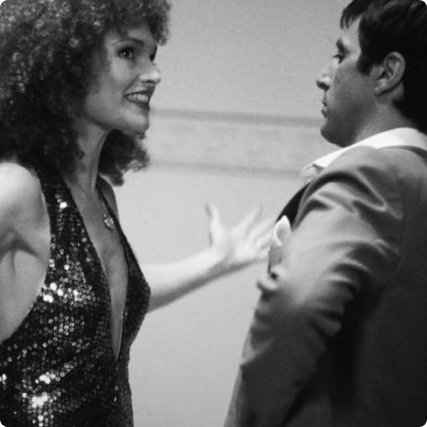
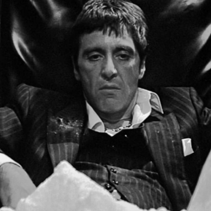
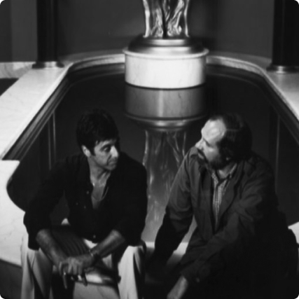

All’interno di questa pagina troverai una serie di immagini che immortalano alcune delle scene più importanti di Scarface.
CLUB SCENE 1
Elvira Hancock
Michelle Pfeiffer nei panni di Elvira, la protagonista femminile, è in grado di catturare sia per la sua bellezza che per le espressioni di
rassegnazione e insofferenza che la caratterizzano.
CLUB SCENE 2
La moglie del capo
Vari episodi dimostrano a Tony che, tutto sommato, Frank non è un boss così temibile, e che lui al suo posto potrebbe fare di meglio.
Convinto di ciò, il protagonista intraprende un percorso di avvicendamento che lo porterà a sfidare l’organizzazione mafiosa nella quale aveva iniziato a lavorare.
Con il tempo si prenderà tutto, perfino la bella Elvira.

RANDOM SCENE
Fratello e sorella
La smania di potere porta Tony a sviluppare una forte gelosia nei confronti della sorella Gina.
Più avanti nel film, il protagonista ucciderà Manny, il suo miglior amico, solamente per aver scoperto la relazione che li lega.

FINAL SCENE 1
Cocaina
In preda ad uno dei suoi numerosi deliri di onnipotenza, Tony sniffa una grande quantità di cocaina nel suo ufficio.

FINAL SCENE 2
Break
All’interno di questo scatto possiamo vedere Al Pacino e Brian De Palma consultarsi sul set del film prima del gran finale.
FINAL SCENE 3
Nella tana del lupo
La reggia di Tony è la vera protagonista del finale del film.
Con l’arrivo degli uomini di Alejandro Sosa, la hall in particolare, si trasforma da simbolo di opulenza a teatro di guerra.
Qui avviene la sanguinaria sparatoria che porta alla conclusione della storia con la morte di Tony.